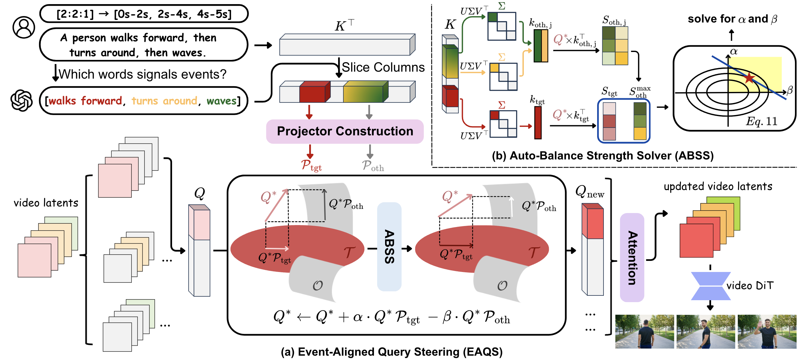

Abstract
Recent advances in text-to-video diffusion models have enabled high-fidelity and temporally coherent videos synthesis. However, current models are predominantly optimized for single-event generation. When handling multi-event prompts, without explicit temporal grounding, such models often produce blended or collapsed scenes that break the intended narrative. To address this limitation, we present SwitchCraft, a training-free framework for multi-event video generation. Our key insight is that uniform prompt injection across time ignores the correspondence between events and frames. To this end, we introduce Event-Aligned Query Steering (EAQS), which steers frame-level attention to align with relevant event prompts. Furthermore, we propose Auto-Balance Strength Solver (ABSS), which adaptively balances steering strength to preserve temporal consistency and visual fidelity. Extensive experiments demonstrate that SwitchCraft substantially improves prompt alignment, event clarity, and scene consistency compared with existing baselines, offering a simple yet effective solution for multi-event video generation.
Methodology
Overview of SwitchCraft. (a) EAQS takes a text prompt and user specified event time spans, identifies anchor tokens for each event, and constructs event specific projectors from their attention keys. It steers video queries toward the target event and away from others in each temporal span. (b) ABSS estimates enhancement and suppression strengths by extracting dominant directions from the event keys and correcting the attention deficit. The updated queries pass through the video diffusion transformer so that each temporal span follows its intended event with smooth transitions.
Qualitative Comparisons
SwitchCraft executes all events in the intended order, prevents leakage and omission, and maintains subject and scene consistency compared to baseline methods.
Creative Occluding Transitions
SwitchCraft produces in-shot occluding transitions that blend the first and last scenes while preserving subject identity, whereas baselines leave residual transition elements or degrade identity and scene coherence.
Ablation Study
Effectiveness of the key components. The full method yields complete sequences with stable quality, whereas removing parts leads to event leakage, omission, and degraded visual quality.
More SwitchCraft Demos
A man raises one arm, then scratches his head, then runs forward.
A girl bends her knees, then touches her toes, then stands up.
In a living room, a dog sits, then jumps onto the sofa, then lies down.
A girl is jumping in a gym, then stops and claps her hands.
On a beach, a woman jogs, then drinks from a bottle, then continues jogging.
A woman raises both hands, then points with one finger forward, then gives a thumbs up.
A red car drives on a sunny highway, then drives through a dark tunnel, then drives along a foggy mountain road.
A woman sits on a sofa in a living room, then stands up, then walks to the window, then opens the curtains and looks outside.
A student sits straight at a desk and opens a laptop, then types, then leans back and stretches arms.
A single tree stands in an open field on a sunny day, then dark clouds move in and cover the sky, then rain starts falling around the tree.
BibTeX
@inproceedings{xu2026switchcraft,
title={SwitchCraft: Training-Free Multi-Event Video Generation with Attention Controls},
author={Xu, Qianxun and Song, Chenxi and Cai, Yujun and Zhang, Chi},
booktitle={Proceedings of the IEEE/CVF Conference on Computer Vision and Pattern Recognition (CVPR)},
year={2026}
}